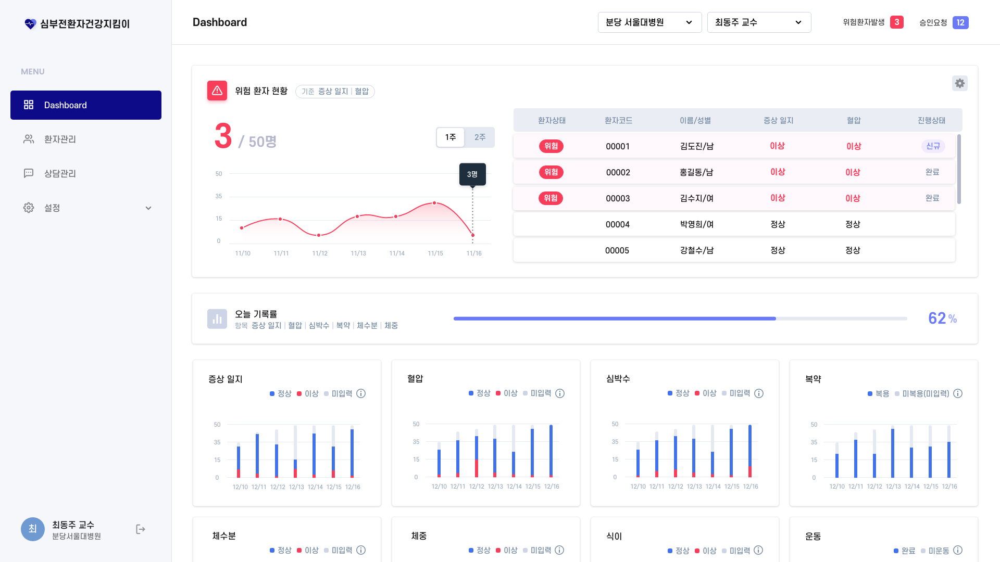
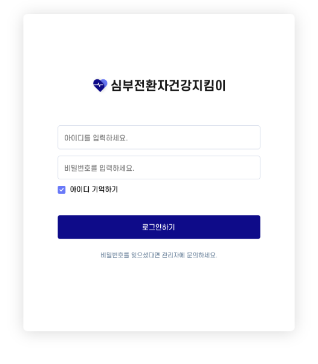
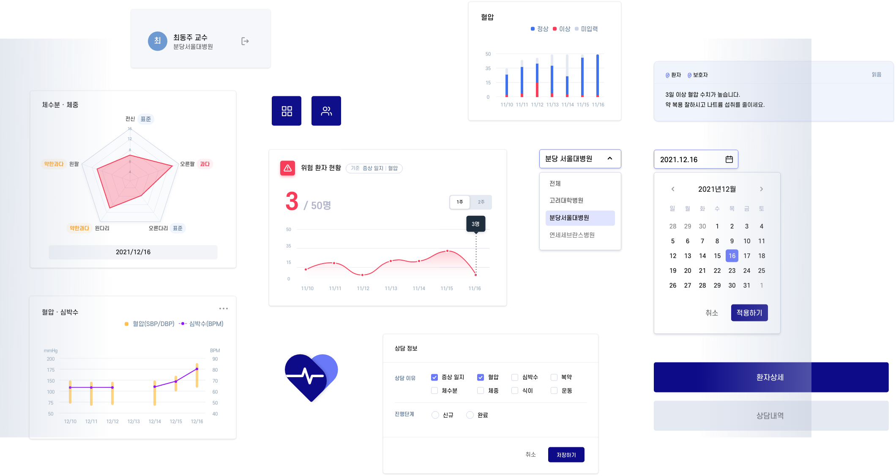
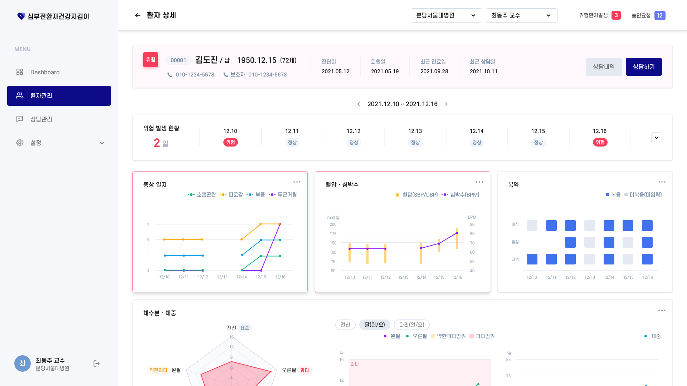
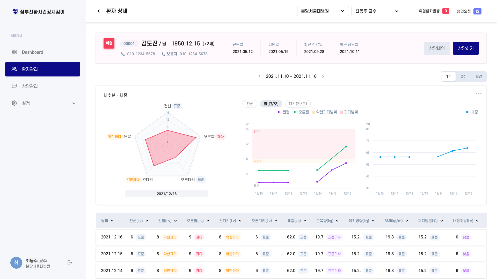
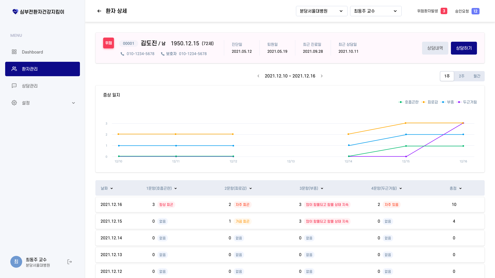
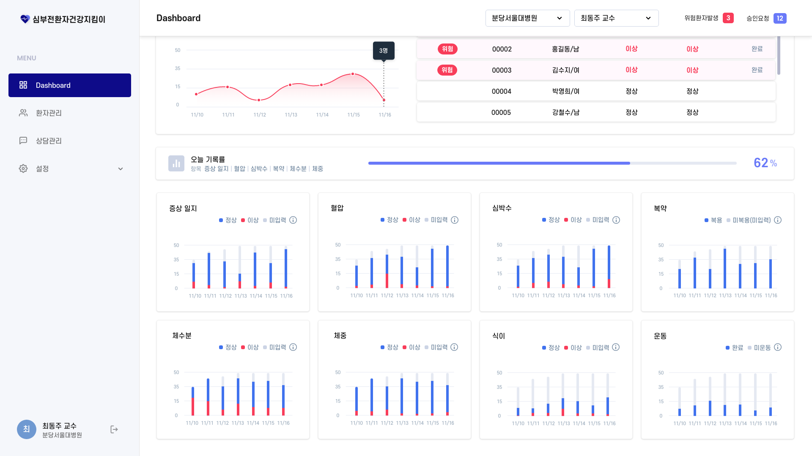

next w
SGIS EDU

About Project 심부전환자 건강지킴이는, KT-한국노바티스-대한심부전학회에서 환자의 입원 위험관리 서비스 개발을 위해 진행된 POC프로젝트로 환자에게 수집한 데이터를 토대로 환자 별 증상 및 질병 추이, 입원 위험도 등을 확인하고 관리하는 의료진용 서비스 입니다.
의료진용 서비스는 환자관리 업무의 효율성과 모니터링을 통해 즉각적으로
위험도를 확인하고 대응하는 것이 중요하였습니다.
따라서, 사용자에게 필요한 핵심 정보에 집중하게 하고, 정보의 트렌드를 인지하여
빠른 의사 결정을 하도록 돕는 것을 목표로 하였습니다.


한글, 영문, 숫자의 형태가 꽉 찬 직사각형 구조로 이루어져 있어 시각적으로 안정적이고 가독성이 높은 에스코어드림 서체를 사용합니다.
메인 컬러 네이비는 서비스에 대한 신뢰감과 함께 집중력을 전달합니다. 백그라운드와 요소에 사용된 절제된 그레이와 정보에 사용된 선명하고 채도 높은 컬러들의 조합은 자연스럽게 정보에 주목하게 하여 빠른 인지를 돕습니다.

심장 박동을 모티프로 한 애니메이션으로 심부전환자 건강지킴이의 아이덴티티를 가장 직관적으로 전달합니다.


정보 특성을 고려한 데이터 시각화를 통해 다양한 정보에 대한 사용자의 인지부하를 줄여 핵심 정보를 빠르게 캐치하고 접근할 수 있도록 구성하였습니다.



next w
SGIS EDU